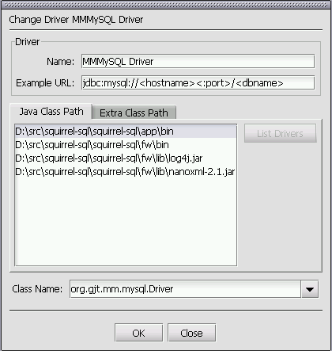
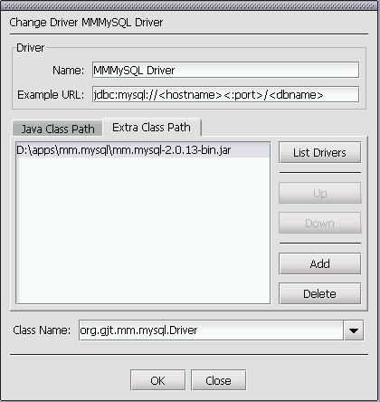
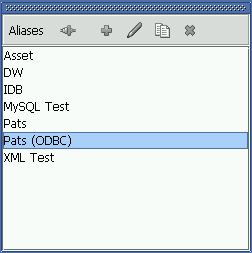
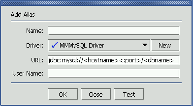
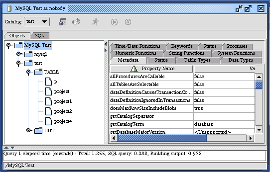
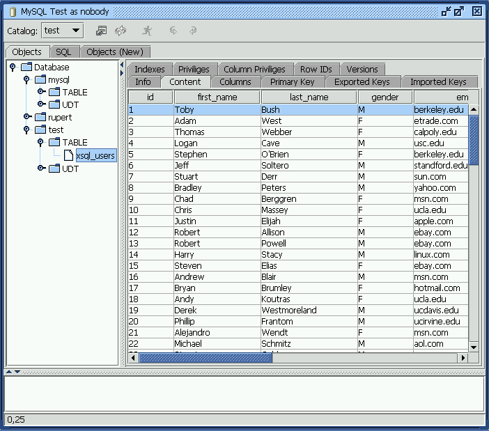
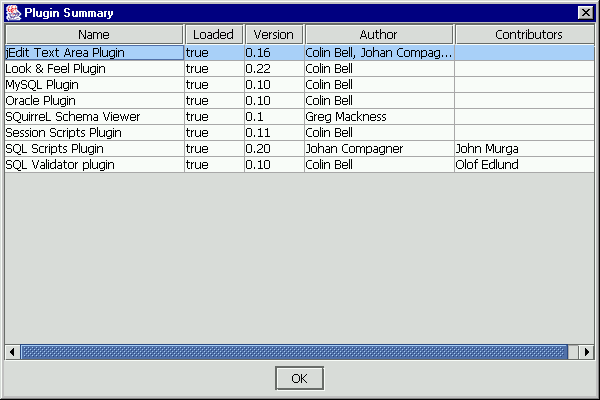

|
|
SQL Client Quick Start |
| Contents |
| Introduction |
| The Driver |
| The Alias |
| Connecting |
| Executing SQL |
| Global Preferences |
| New Session and Session Properties |
| Plugins |
A number of default driver definitions ship with SQuirreL SQL Client.
These can be seen in the Drivers List window (View Drivers option
on the Windows menu) when you first start up
SQuirreL SQL Client. You can create new ones using the New Driver
option on the Drivers menu. The
 icon next
to a driver indicates that it has been successfully loaded while the
icon next
to a driver indicates that it has been successfully loaded while the
 icon
indicates that the JDBC driver could not be loaded and so cannot be used
to connect to a database.
icon
indicates that the JDBC driver could not be loaded and so cannot be used
to connect to a database.

The Drivers List Window
All of the default driver definitions assume that the JDBC driver classes are in the current class path. If this is not the case you will need to modify the driver definition to point to the jar file that contains these classes.
This is an example of a driver definition. This dialog can be displayed
by selecting a driver definition in the Drivers List window and then
selecting the 
Driver Maintenance Window (Java Class Path tab) The Name text field specifies an easy to remember name for the
database driver definition and is the text shown in the Drivers List window. The Example URL shows an example URL for this driver. This can
be found in the documentation that comes with the driver. The entries in the Java Class path tab show the directories
and jars in the current class path. If you click on a jar file and press the
List Drivers button then the class names of all the JDBC drivers
in that jar will be placed in the Class Name dropdown control.
The Class Name specifies the class name of the JDBC
driver. Either select an existing entry in the dropdown or key in the
class name of the JDBC driver (it can normally be found in the documentation
that comes with the driver).

Driver Maintenance Window (Extra Class Path tab) The Extra Class Path tab allows you to select a JDBC driver
that is in a jar file that is not in the current class path. The Add
button will display a File Open dialog allowing you to select one or more
jar files. The Delete button allows you to remove a jar file from
the list. The Up and Down buttons allow you to change the
sequence of the jar files. The List Drivers button will place
the class names of all the JDBC drivers in the currently selected jar file
into the Class Name dropdown. Press the OK button to save the driver definition and close the window or
the Close button to close the window without saving any changes. Now you need to create an alias to your database. Display the Aliases List window (View Aliases option on the Windows menu).
When you run SQuirreL SQL Client for the first time this window will be
empty.  The Aliases List Window Take the New Alias option from the Aliases menu and
the following dialog will be displayed.  The Alias Maintenance Window Enter a easy to remember name in the Name field for this
database URL. This is the text that will be displayed in the Aliases List
Window. Select the driver for this alias from the Driver dropdown or
click on the New button to create a new driver definition. Change the URL to point to your database.
Optionally enter a user name if you want the alias to default to a
specific user. The Test button will allow you to attempt to connect to your
alias to ensure that the parameters you have entered are correct. Press the OK button to save the alias definition and close the window or
the Close button to close the window without saving any changes. The new alias should now appear in the Connect To dropdown.
Select it in the dropdown and enter your user name and password in the
connection dialog, press OK and you should be connected. The Connection Window When you first connect to a database a Session window will be shown.
 The Session Window The Object Tree on the left shows the structure of the database. Clicking
on various nodes within this object tree will show further information
in the right hand detail panel. In this example the database metadata
is shown. Clicking on the title of a column will sort the display by
the data in that column. This is true of all table displays in SQuirreL. This shows the data displayed when a table is selected in the
Object Tree.  Table Display SQL can be executed from the SQL tab in the window that opens once
you have connected to an alias. Multiple statements can be executed
and the results will be displayed in multiple tabs below the SQL entry
area. When the SQL tab is selected pressing <ctrl><enter>,
taking the Execute SQL option from the Session menu or pressing the Execute
SQL button in the session windows toolbar will execute the entered SQL. If a single statement is entered then pressing <ctrl><enter>
will execute just that statement. If you only want to execute part of the SQL entered then hightlight the
SQL that you want to execute and press <ctrl><enter>. To only execute a single statement amongst several statements (separated
from the other statements by at least one blank line) within the SQL entry
area then click on the line containing the statement that you want to execute
and press <ctrl><enter>. The characters -- at the beginning of a line will turn it into
a comment. As can be seen in the above graphic, doubleclicking in a cell in the query
results will open up a new window showing the entire contents of the cell. The A plugin is an application written in Java that runs within SQuirreL. This
allows developers to enhance the functionality of SQuirreL without having to
rebuild the SQuirreL application itself. It also allows you to "pick and
choose" the functionality that you want in SQuirreL. For instance if
you don't use Oracle then you don't need the Oracle specific functionality
supplied by the Oracle plugin. Plugins can be downloaded from the SQuirreL web site http://squirrel-sql.sf.net To install a plugin unpack the zip or gz file into the plugins directory
within the SQuirreL SQL Client application directory keeping the directory
structure. To use the plugin you will need to restart SQuirreL. The "Summary" option on the "Plugins" menu will show
a dialog box of the plugins currently installed. The Alias
Connecting

Session Window
Executing SQL

 icon on the tabbed folder
containing the SQL results allow you to "tearoff" the
query results from the tabbed folder and display it in its own
window.
icon on the tabbed folder
containing the SQL results allow you to "tearoff" the
query results from the tabbed folder and display it in its own
window.
Global Preferences
New Session and Session Properties
Plugins